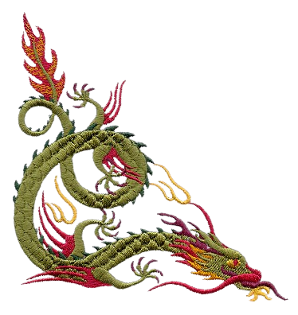
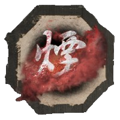
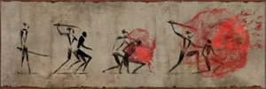
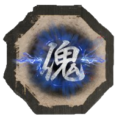
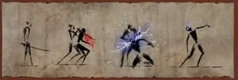
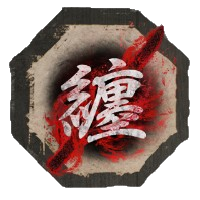
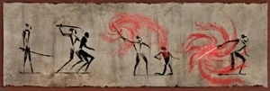

Técnicas de Ninjutsu são técnicas especiais que podem ser encontradas ao longo da jornada de Sekiro, elas podem ser usadas após efetuar um ataque mortal pelas costas de um inimigo e seu uso custa brasões espirituais.
Fumaça Sangrenta


Toda vez que este ninjutsu for ativado ele criará uma fumaça a partir do sangue da vitima se Sekiro permanecer dentro da fumaça ele ficará indetectavel até a nuvem se dissipar, qualquer inimigo dentro da nuvem ficará desnorteado e poderá ser executado, assim reativando a nuvem e podendo facilmente se livrar de vários inimigos.
Obtido após derrotar Genichiro Ashina e sua segunda fase secreta Genichiro Caminho de Tomoe no alto do Castelo de Ashina.
Marionete


Toda vez que esse ninjutsu for ativado você dominará a mente da vitima assim fazendo ela lutar ao seu lado ou o usando para completar algum enigma em uma área específica.
Obtido após completar a caça aos Macacos do biombo no mundo secreto no topo do Templo Senpou no Monte Kongo.
Concessão


Toda vez que esse ninjutsu for ativado você absorverá o sangue da vitima e o imbuirá em sua espada assim aumentando o seu alcance, se o sangue da vítima tiver alguma propriedade diferente ela será embuída em sua espada como veneno ou roubo de vida.
Obtido após derrotar o Primata sem cabeça nas profundezas de Ashina, para ele aparecer você precisará derrotar o Primata Guardião e depois derrotar sua fase secreta sem cabeça no Vale Submerso.